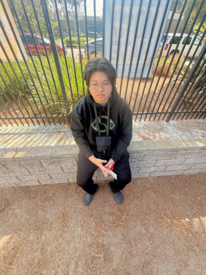

Home of Petalburg
Lucky you found this website, eh? If you're wondering about the colors, it's because of a guy named Koops. And you may be saying to yourself, "But isn't that weird?" Honestly, heck yeah. But have you stopped and thought about your idol sometimes? Once? Twice? Even more? Anyways, if you're here, congrats! Here are all the photos and images I've used in Digital Media Arts. Let's go, Class of 2029!

Latest Photography Work
New Graphic Designs
Contact for Commissions